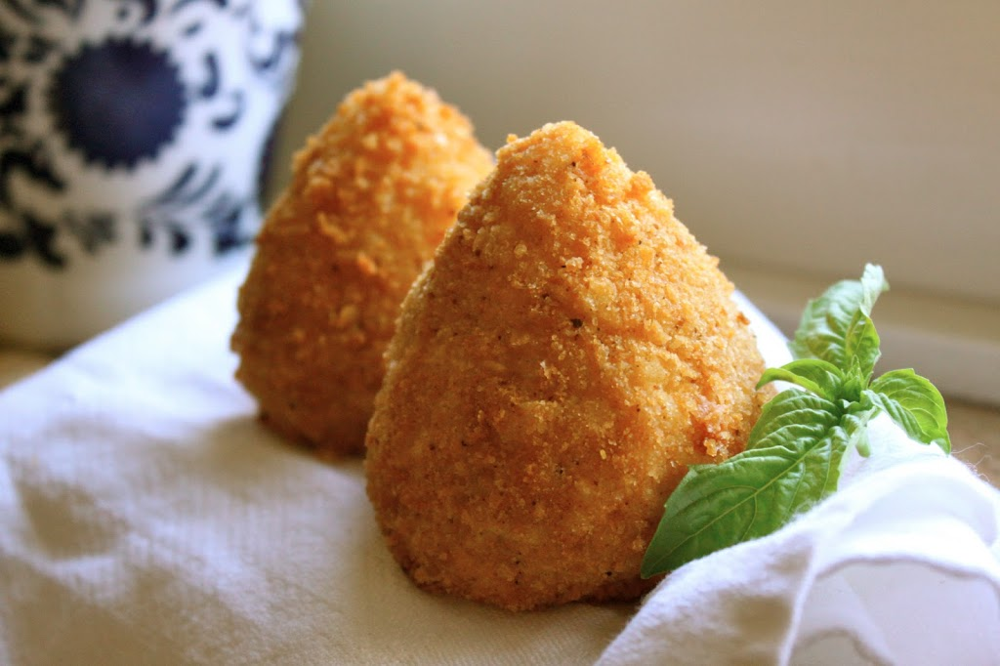

ARANCINI
Western Dish (Italy)

Takes 50 minutes
Makes 20 servings
MAIN DISH
Ingredients
- 1 tablespoon olive oil
- 1 small onion, finely chopped
- 1 clove garlic, crushed
- 1 cup uncooked Arborio rice
- 1/2 cup dry white wine
- 2 1/2 cups boiling chicken stock
- 1/2 cup frozen green peas
- 2 ounces finely chopped ham salt and pepper to taste
- 1/2 cup finely grated Parmesan cheese
- 1 egg, beaten
- 1 egg
- 1 tablespoon milk
- 4 ounces mozzarella cheese, cut into 3/4 inch cubes
- 1/2 cup all-purpose flour
- 1 cup dry bread crumbs
- 1 cup vegetable oil for deep frying
Instruction
- 1. Heat the olive oil in a large saucepan over medium heat. Add onion and garlic, and cook, stirring until onion is soft but not browned. Pour in the rice, and cook stirring for 2 minutes, then stir in the wine, and continue cooking and stirring until the liquid has evaporated. Add hot chicken stock to the rice 1/3 cup at a time, stirring and cooking until the liquid has evaporated before adding more.
- 2. When the chicken stock has all been added, and the liquid has evaporated, stir in the peas and ham. Season with salt and pepper. Remove from the heat, and stir in the Parmesan cheese. Transfer the risotto to a bowl, and allow to cool slightly.
- 3. Stir the beaten egg into the risotto. In a small bowl, whisk together the remaining egg and milk with a fork. For each ball, roll 2 tablespoons of the risotto into a ball. Press a piece of the mozzarella cheese into the center, and roll to enclose. Coat lightly with flour, dip into the milk mixture, then roll in bread crumbs to coat.
- 4. Heat oil for frying in a deep-fryer or large deep saucepan to 350 degrees F (175 degrees C). Fry the balls in small batches until evenly golden, turning as needed. Drain on paper towels. Keep warm in a low oven while the rest are frying.
SOURCE : www.allrecipes.com
Add to Cart
want to try this recipe? order ingredients now!